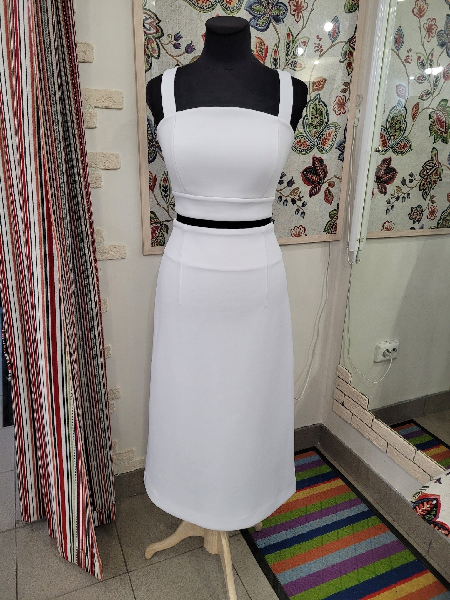
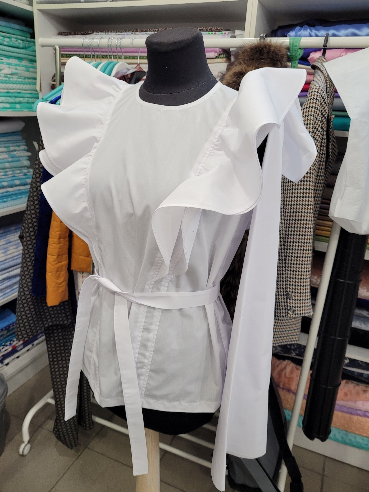
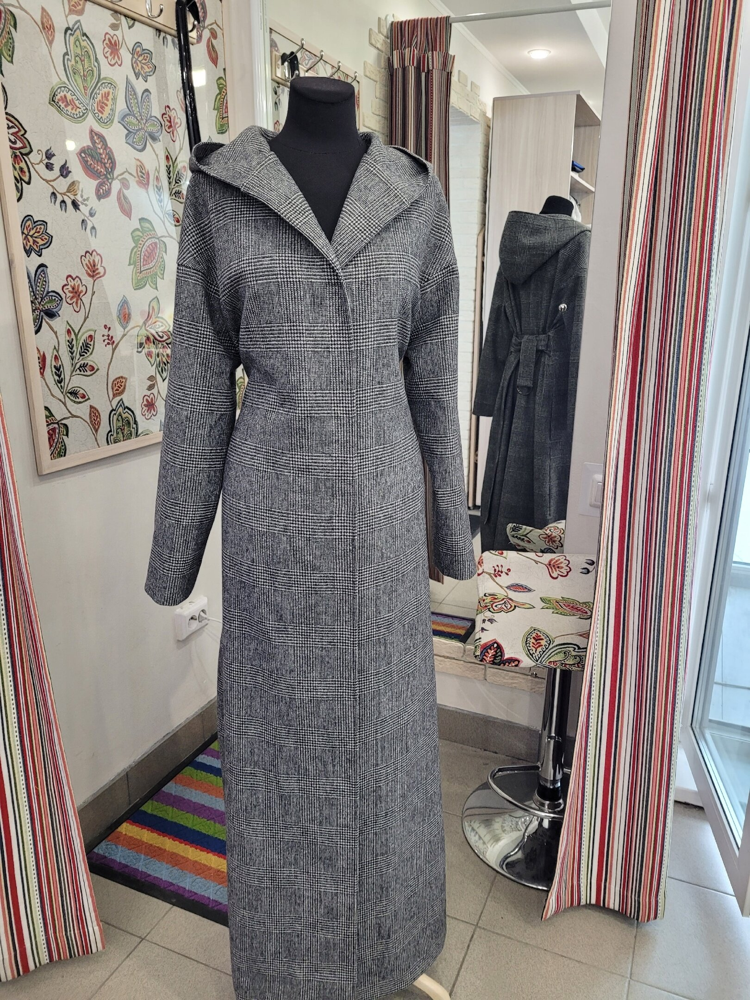
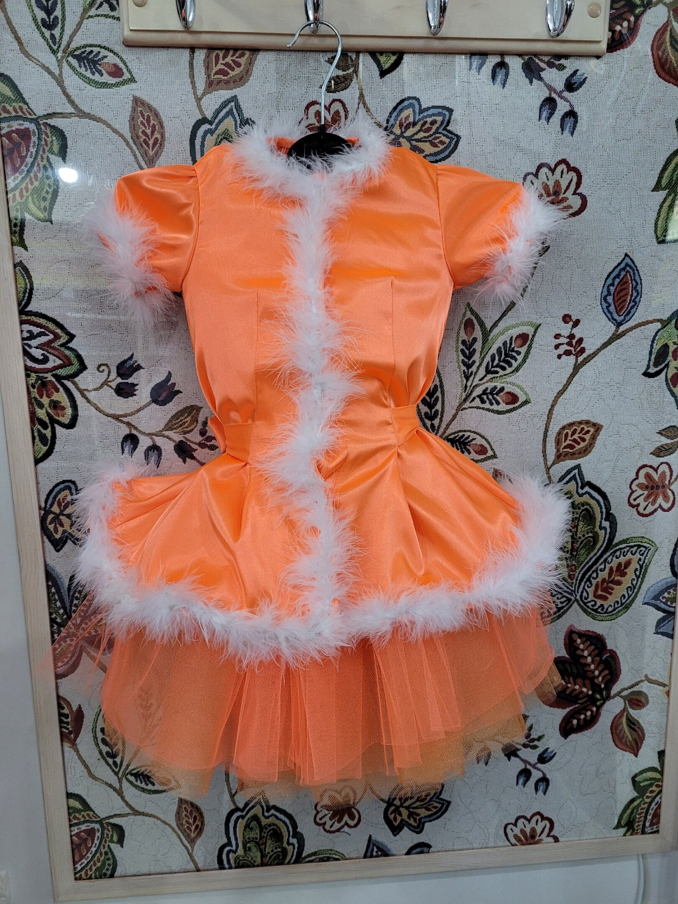

Ателье в Челябинске · подшить, ушить, молния, пошив
Пошив по вашим меркам – и точно в срок
Подшить, ушить, заменить молнию, сшить по меркам. Портные работают индивидуально с каждым клиентом, а за сроки их хвалят чаще, чем за что-либо другое.
- Пошив по индивидуальным меркам
- Работа точно в срок
- Ремонт любой сложности

Что уже в цене
Входит
- Примерка при приёме и при выдаче
- Подкладка и «два шва» – уже в строке
- Вещь отпарена к выдаче
- Не село как надо – поправляем
- Две примерки при пошиве по меркам
Отдельно, если нужно
- Молния, если наша – отдельной строкой
- Ткань и фурнитура при пошиве
- Нетиповая работа – оценим на примерке
Срок и цена известны до визита
Срок считаем со дня примерки. Подкладка, два шва и «сложная ткань» в строке уже учтены.
Подшить
- Брюки, джинсы1 деньуточнить
- Юбка, платье1–2 дняуточнить
- Рукава пальто, куртки2–3 дняуточнить
Ушить или расставить
- Платье, юбка по швам2 дняуточнить
- Брюки в поясе1–2 дняуточнить
- Пиджак по спинке3 дняуточнить
Заменить молнию
- Джинсы, брюки1 деньуточнить
- Куртка, ветровка2 дняуточнить
- Платье, юбка1 деньуточнить
Сшить по меркам
- Юбкаот 7 днейуточнить
- Брюкиот 7 днейуточнить
- Платьеот 10 днейуточнить
- Рубашкаот 7 днейуточнить
Пошив – цена за работу, две примерки в цене. Срочный заказ – если мастер успевает раньше срока из прайса.
Цены в доске — «уточнить»: ждём вашего прайса, вставлю ваши цифры.
Вещь идёт по квитанции
- 01
Фото вещи
Пишете, что нужно, – отвечаем ценой по прайсу и сроком.
- 02
Примерка
Длину и посадку снимаем на вас, работу пишем строкой в квитанции.
- 03
Срок и цена в квитанции
Штампом до того, как взяли иглу. После работы цена не меняется.
- 04
Выдача в срок
Вещь отпарена, при выдаче примерка. Не село – поправляем.



Что стоит в квитанции
Цена не меняется после работы
Всё, что могло всплыть, смотрим на примерке.
Срок – датой
Считаем со дня примерки и пишем датой, а не «на неделе».
Нетиповое – до начала
Оцениваем на примерке и называем цену до того, как взяли иглу.
Одна вещь – один мастер
Имя мастера в квитанции, правки на выдаче делает тот же человек.
Отзывы с Яндекс.Карт
«Дырку зашили отлично, даже незаметно, что она там когда-то была. А ещё мне очень понравилось само ателье и персонал. Персонал очень добрый, вежливый, а так же сразу понял мою просьбу. И выделю самое главное - работа выполнена за очень короткое время, по срокам. В общем работают очень быстро. Это лучшее ателье за такую небольшую цену!»
Евгений Тараканов · 22 ноября 2024
«Работа была выполнена очень аккуратно и красиво, и точно в срок. Само помещение уютное и чистое. Персонал работающий там просто проффесионалы своего дела. Они учли все мои пожелания по дизайну и ткани. И даже по цене всё вышло отлично. Я осталась очень довольная после похода в ателье! Теперь буду обращаться только сюда!!!»
Соня Х · 6 июля 2024
«Радует то, что пошив различной одежды производится для каждого человека индивидуально, т.е. по меркам клиента. А главное, свою работу выполняют в назначенные сроки. А также обрадовала цена и качество работ»
Алена Гатиятова · 22 декабря 2024
Отзывы – дословно с карточки на Яндекс.Картах.
Частые вопросы
Можно узнать цену, не приезжая?
Да: позвоните или напишите в группу ВКонтакте, пришлите фото вещи и два слова, что нужно. Ответим ценой по прайсу и сроком в часы работы.
Нужна запись?
Вещь можно занести без записи: примерка и квитанция займут минут пятнадцать.
С подкладкой дороже?
Нет. Подкладка, два шва и «сложная ткань» уже учтены в строке прайса.
Шьёте по меркам?
Да: платье, юбку, брюки, рубашку. Мерки снимаем сами, две примерки в цене, срок от 7 дней со дня первой примерки.
Пришлите фото вещи – ответим сроком и ценой
- Адрес
- ул. Скульптора Головницкого, 4, этаж 1, Челябинск
- Часы
- пн–пт 10:00–20:00, сб–вс 10:00–19:00
- Телефон
- +7 (962) 485-40-04